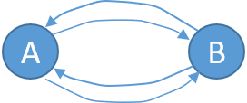

This is another data transmission method.
A communications channel can be defined as a pathway over which information can be transmitted.
A channel could be a physical wire that connects communicating devices, radio, laser, or other radiated energy source that has no obvious physical presence.
All communication channels have a direction associated with them. That sounds awfully scary, but hopefully the diagrams explain that better.
There are 3 possibililites:
| Type | Diagram | What does it do? |
|---|---|---|
| Simplex |
| |
| Half-Duplex |
| |
| Full-Duplex |  |
|